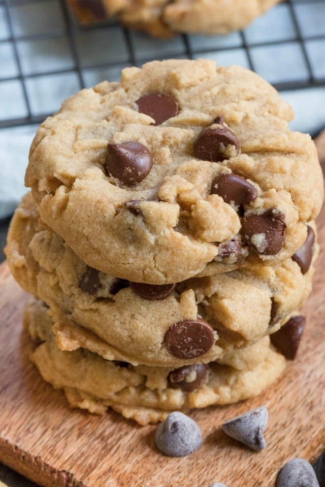
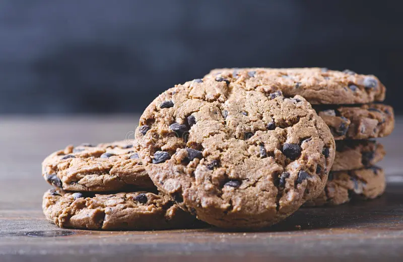

Introduction:



Cookies are a staple of baking and one of the most well-known treats across the world.
This simple cookie recipe brings you the taste of well-crafted, restaurant-quality cookies
without the hassle or the price.
With only eight common household ingredients and steps that anyone can follow,
this recipe gives you the best-tasting cookies with the least amount of effort.
Ingredients:
- ½ cup butter
- ½ cup granulated sugar
- ¼ cup brown sugar packed
- 2 teaspoons vanilla extract
- 1 large egg
- 1 ¾ cups all-purpose flour
- ½ teaspoon baking soda
- ½ teaspoon kosher salt
instructions:
- Preheat the oven to 350 F.
- Microwave the butter for about 40 seconds. Butter should be completely melted but shouldn’t be hot. In a large bowl, mix butter with the sugars until well-combined.
- ½ cup butter,½ cup granulated sugar,¼ cup brown sugar
- Stir in vanilla and egg until incorporated. 2 teaspoons vanilla extract,1 large egg
- Add the flour, baking soda, and salt. Please read the recipe note about properly measuring flour. 1 ¾ cups all-purpose flour,½ teaspoon baking soda,½ teaspoon kosher salt
- Mix dough until just combined. Dough should be soft and a little sticky but not overly sticky. Stir in chocolate chips.
- 1 cup semisweet chocolate chips
- Scoop out 1.5 tablespoons of dough (medium cookie scoop) and place 2 inches apart on baking sheet.
- Bake for 7-10 minutes, or until cookies are set. They will be puffy and still look a little underbaked in the middle.\